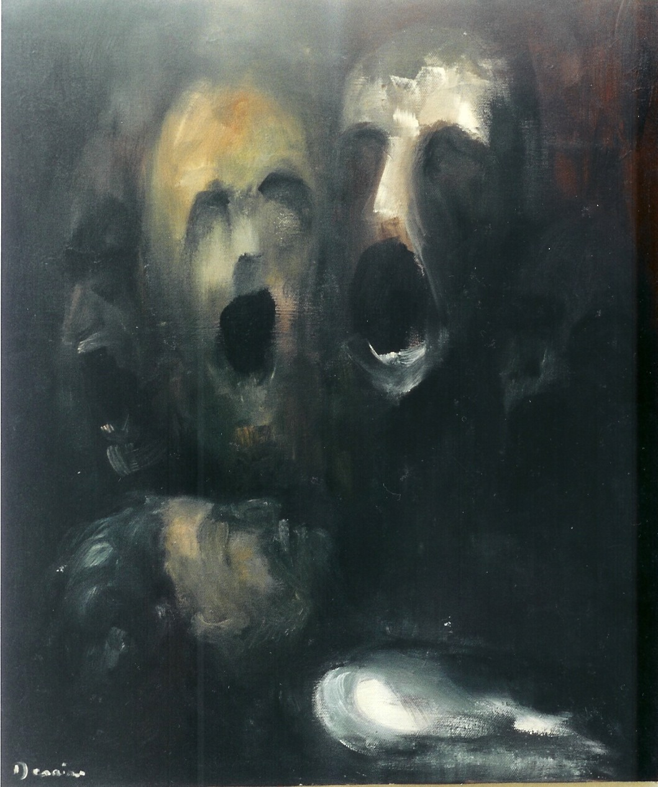

Daniel opened the door and saw the Morales family suspended in limbo between life and death. Their eyes were empty, and their bodies trembled as if trying to free themselves from invisible chains.

Daniel tried to touch their hands, but a deafening roar echoed through the house and threw him violently out. He woke up in the garden, alone, with black scars and burn marks on his hands. From that day on, every mirror anywhere in town seemed to reflect the Morales family, and their laughter and cries haunted him even in his sleep. Each reflection was a reminder that he had brushed against death and survived, only to suffer eternally.